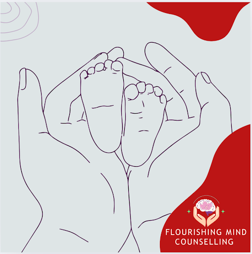
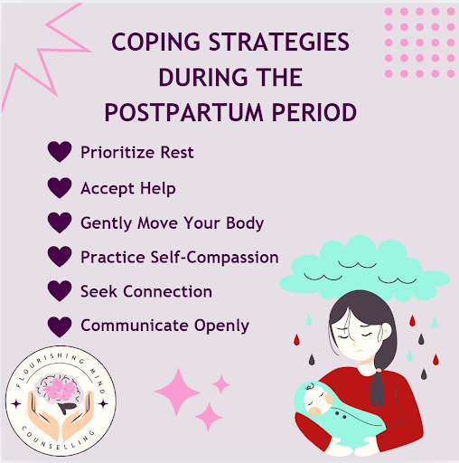
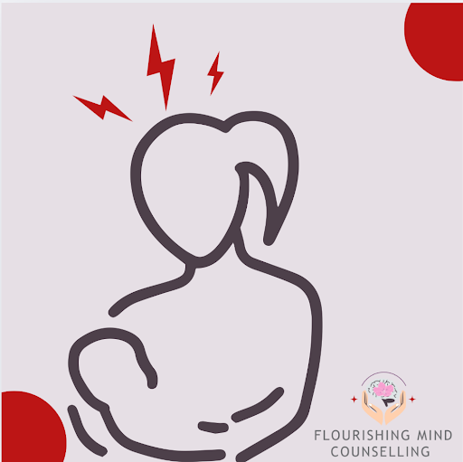
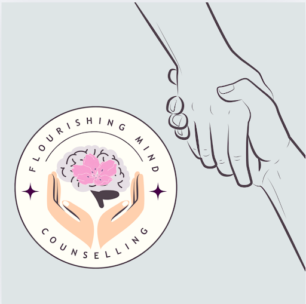
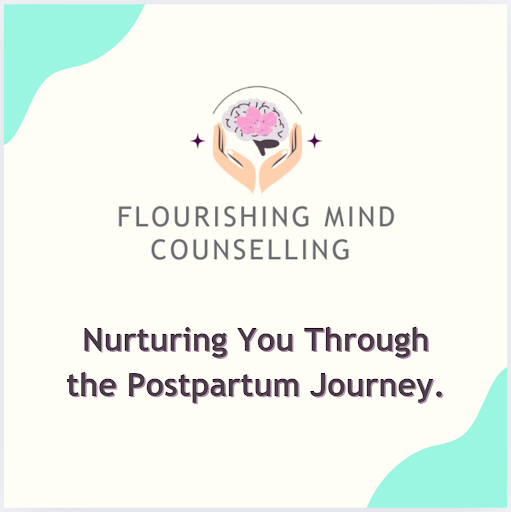

Postpartum & Mental Health: A Supportive Resource Guide
Welcome to a Safe Space for Your Postpartum Journey
The postpartum period is a time of significant change - physically, emotionally, and mentally. While it can be a beautiful experience, it can also bring unexpected challenges. At Flourishing Mind Counselling, we recognize that every parent’s journey is unique, and we are here to support you. This resource page offers guidance, reassurance, and practical tools to help you navigate this transformative stage with confidence and care.

Common Emotional Challenges in the Postpartum Period
The postpartum experience comes with a range of emotions, and while many parents feel joy, it is also common to experience challenges such as:
- Fatigue and sleep deprivation – Lack of rest can impact mood, focus, and emotional well-being.
- Postpartum depression (PPD) – Persistent sadness, low energy, or loss of interest in daily activities.
- Postpartum anxiety (PPA) – Excessive worry, restlessness, or difficulty relaxing.
- Intrusive thoughts – Unwanted, distressing thoughts about your baby or yourself.
- Guilt and self-doubt – Feeling like you’re not doing enough or questioning your abilities as a parent.
- Identity struggles – Adjusting to the evolving sense of self after childbirth.
- Feelings of isolation or loneliness – A sense of disconnection from others or lack of support.
- Relationship changes – Navigating shifts in dynamics with your partner, family, or friends.
- Body image concerns – Adjusting to physical changes and feeling pressure to "bounce back."
If any of these feelings become overwhelming, know that support is available.

Coping Strategies & Self-Care Tips
- Prioritize rest when possible – Sleep deprivation can impact mood and energy levels; rest when you can.
- Accept help – Lean on your support system, whether it’s a partner, family, or friends.
- Engage in gentle movement – Activities like short walks or stretching can help reduce stress.
- Practice self-compassion – Be kind to yourself and acknowledge that perfection is not the goal.
- Seek connection – Join a postpartum support group or reach out to loved ones.
- Communicate openly – Express your needs and feelings to those around you.
When to Seek Professional Support
Seeking support is not just for those in crisis, it can be valuable for anyone wanting to prioritize their emotional well-being. Therapy can help you process emotions, gain confidence in your new role, and build coping strategies.
Consider reaching out for professional support if you experience:
- Persistent sadness, excessive worry, or emotional numbness.
- Difficulty bonding with your baby.
- Intense irritability, anger, or mood swings.
- Feelings of worthlessness, shame, or guilt that interfere with daily life.
- Thoughts of harming yourself or your baby (seek immediate help if you experience this).
If you are in crisis, call 9-1-1 or go to the nearest emergency department. You can also reach out to the Suicide Crisis Helpline by calling or texting 9-8-8 for immediate support.

How Flourishing Mind Counselling Can Help
At Flourishing Mind Counselling, we provide compassionate, client-centered therapy for parents in the postpartum period. Our sessions can help you:
- Manage postpartum depression and anxiety.
- Navigate identity changes and embrace your new role.
- Process feelings of guilt, self-doubt, or isolation.
- Strengthen your confidence in parenting.
- Address body image concerns and self-esteem challenges.
- Improve communication and relationships with partners or loved ones.
We provide phone and video therapy sessions to best suit your needs.

You Are Not Alone – We Are Here to Support You
Parenthood is a journey filled with ups and downs, and you don’t have to navigate it alone. Whether you are feeling overwhelmed or simply want extra support, we are here to help. If you’re ready to explore therapy or have questions, we invite you to reach out.

Take the Next Step Toward Emotional Well-Being
📞 Call us: 613-227-7212
📧 Email: admin@flourishingmindcounselling.ca
🌐 Schedule a consultation